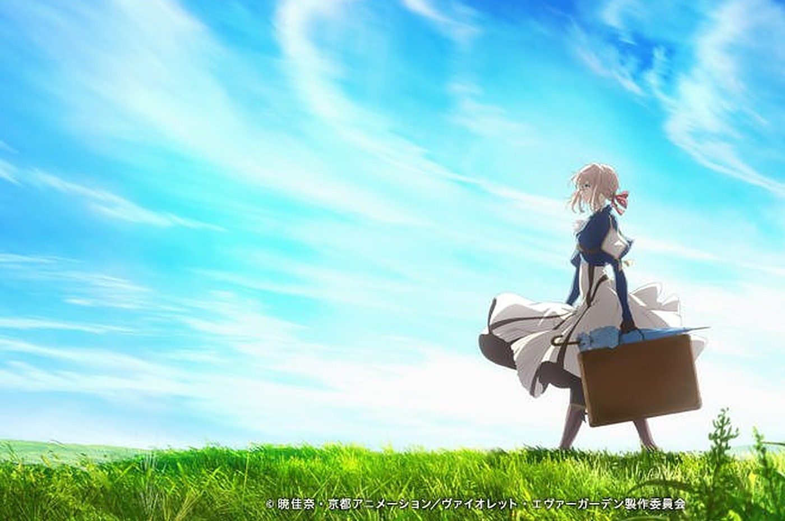

Kyoto Animation · Since 1981
京都动画KYOTO ANIMATION
从京都宇治的一间上色工作室，到《凉宫春日的忧郁》《轻音少女》《声之形》—— 四十多年里，京阿尼一直做同一件事：把普通的教室、走廊、河堤与放学后的黄昏， 画成会发光的日常。
关于这个专题
京都动画（京都アニメーション，通称“京阿尼”）是日本少数坚持“社内制作”的动画公司。 它不追求数量，而是把作画、上色、美术、摄影尽量收在自己的工作室里，用稳定的团队打磨每一帧。 于是我们记得的往往不是宏大的战斗，而是《轻音少女》里午后的音乐教室、《冰菓》里樱花落下的走廊、 《声之形》里水面上的光。
这个专题分为五章：先认识公司与它的沿革，再看八部代表作品，然后逐部拆解剧情、人物、声优与制作阵容； 接着讨论京阿尼如何影响同人圈、coser 圈与整个日本动画产业；最后一章，记录 2019 年 7 月 18 日那场带走了 36 条生命的纵火案。